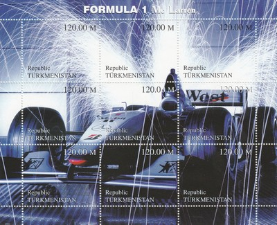
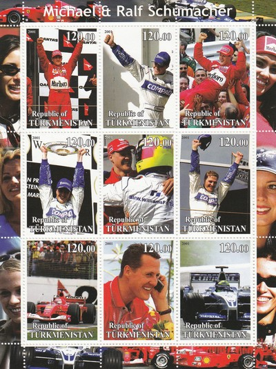
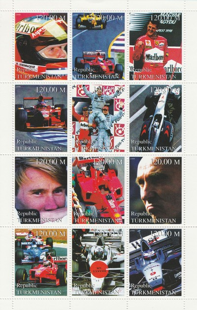
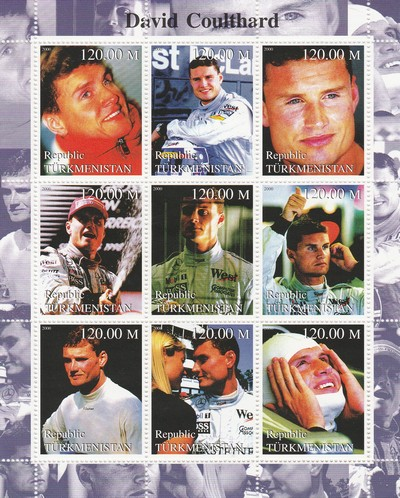
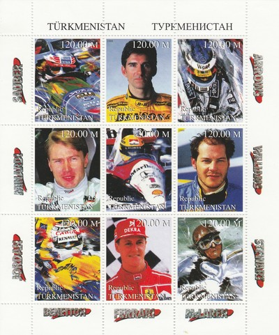
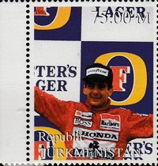
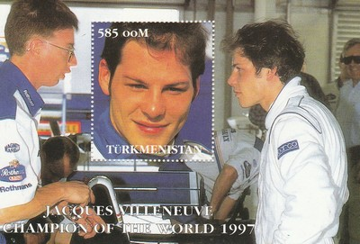

Depicted on Postage Stamps
|
 Issue date: 2000 A sheet of 9 stamps showing a McLaren F1 car. The McLaren MP4/15 was the chassis with which McLaren-Mercedes competed in the 2000 F1 season. The car proved highly competitive and scored seven victories, but was still narrowly beaten to both championships by Michael Schumacher in the Ferrari F1-2000. The drivers this year were Mika Hakkinen and David Coulthard.  Issue date: 2001 A mini sheet showing the Schumacher brothers. Michael Schumacher. Ralf Schumacher raced in F1 from 1997 to 2007; he drove for Jordan, then Williams and finally Toyota. R Schumacher did not enjoy anything like the success of his older brother, he only achieved 6 wins in his F1 career.  Issue date: 1999 A mini sheet of 12 values showing various cars and drivers from the 1999 season. The 1999 F1 season commenced on March 7, 1999, and ended on October 31 after sixteen races. The season saw the introduction of a new event to the World Championship calendar, the Malaysian Grand Prix. The drivers World Championship was won by Mika Hakkinen, although Eddie Irvine, David Coulthard and Heinz-Harald Frentzen all had a chance of clinching it. Ferrari won the constructors World Championship, which paved the way for the Michael Schumacher-era of Ferrari dominance at the start of the 21st century. Schumacher was injured during the British Grand Prix at Silverstone, suffering a broken leg in a crash, but returned before the end of the season.  Issue date: 2000 A mini sheet showing David Coulthard; Coulthard drove in F1 from 1994 to 2008 for Williams, McLaren and Red Bull. DC never won the drivers title, but came 2nd in 2001 (McLaren) and was placed 3rd in 1995 (Williams), 1997, 1998 and 2000 (McLaren). Coulthard amassed a notable points haul placing him seventh on the all-time scorers list (535 points), being the top British scorer. He is also fourth on the list of most race starts behind Barrichello, Patrese and Schumacher.  Issue date: 1999 A mini sheet of 9 values showing various drivers. Damon Hill - in 1999 Hill drove for Jordan. Mika Hakkinen - in 1999 Hakkinen drove for McLaren and won the drivers title. Jacques Villeneuve - in 1999 Villeneuve drove for BAR. Michael Schumacher - in 1999 Schumacher drove for Ferrari.  Issue date: 1999 A single stamp from the sheet 'Events and People of the 20th Century' showing Ayrton Senna.  Issue date: 1998 A mini sheet of one value featuring Jacque Villeneuve's Drivers' Championship in 1997. Going into the final race of the season Michael Schumacher (Ferrari F310B) was 1 point ahead of Jacques Villeneuve (Williams Renault FW19) in the championship - the qualifying session for the final race (European Grand Prix, Jerez) was noteworthy, as three drivers, Villeneuve, Schumacher, and Frentzen, all registered the same fastest qualifying time. Villeneuve was awarded pole position since he had set the time first, and this would be the final pole of his F1 career. At the start of the race, Schumacher had a good start, overtaking Villeneuve to take the lead. By lap 48 Villeneuve was catching up to Schumacher and attempted to overtake. Braking later than the German at the Dry Sac corner, Villeneuve had the inside line and was slightly ahead when Schumacher turned into him, his front right wheel connecting with the sidepod of the Williams car. Schumacher retired on the spot and Villeneuve went to take third place and earn four points, enough to take the 1997 title. |